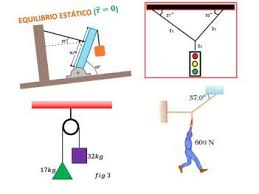

Analisis de Fenomenos Fisicos
¿Qué es ?
El análisis de fenómenos físicos consiste en el estudio sistemático de cambios en la materia que no alteran su estructura interna o composición química, observando principios de movimiento, energía, fuerza y estados de la materia. Implica la medición de variables (longitud, tiempo, masa), el uso de modelos matemáticos y la aplicación de leyes físicas para predecir comportamientos, siendo fundamental en ingeniería y ciencias.

Regresar